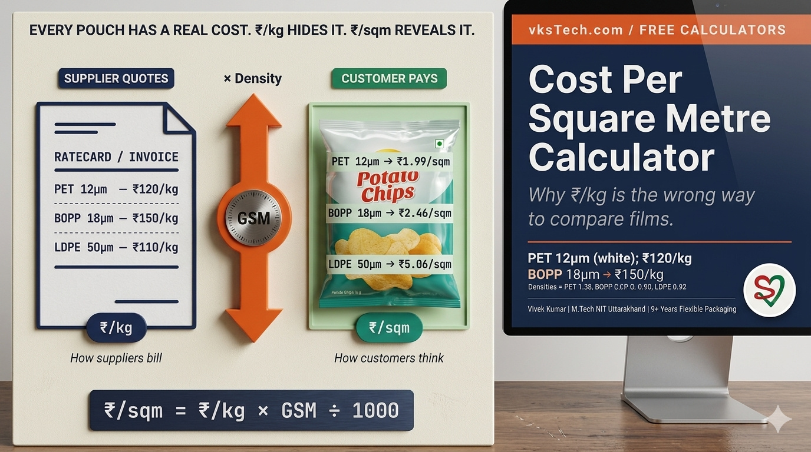
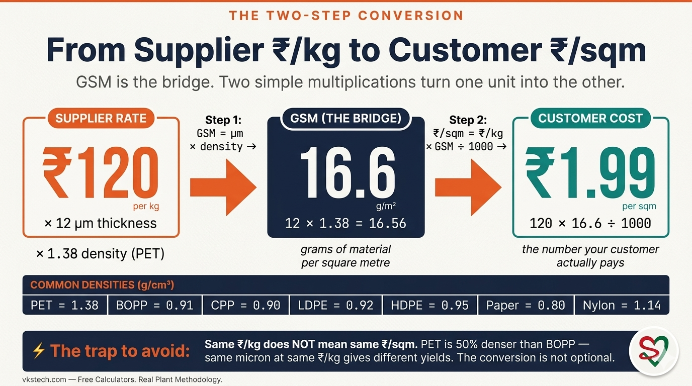
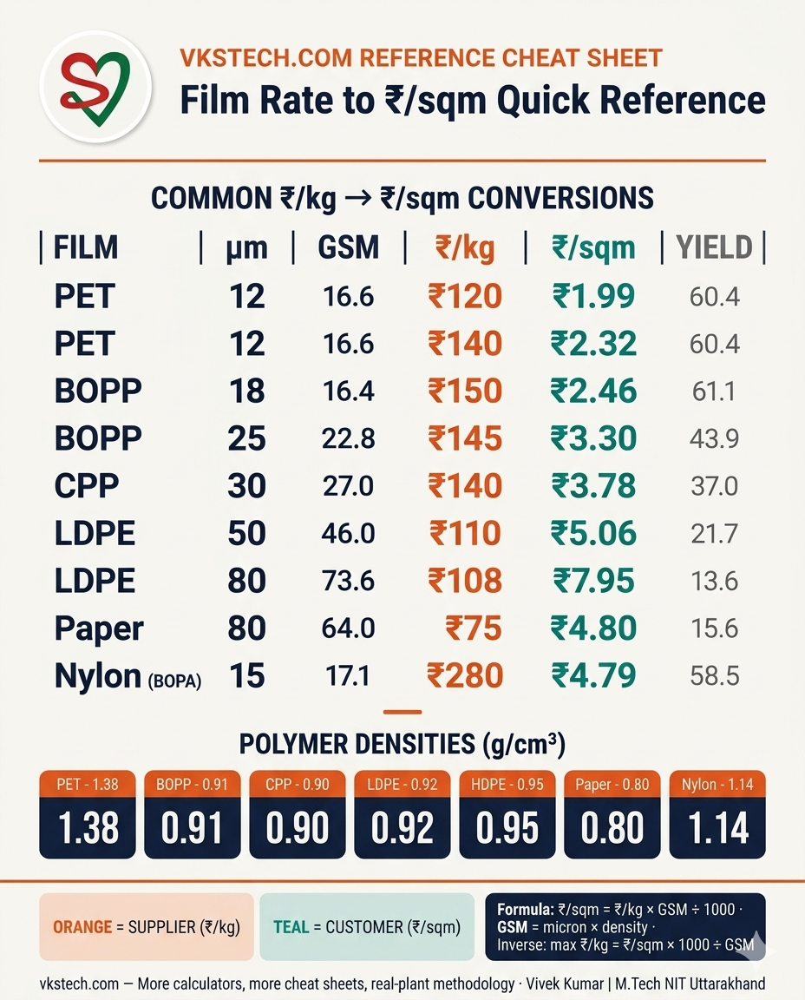
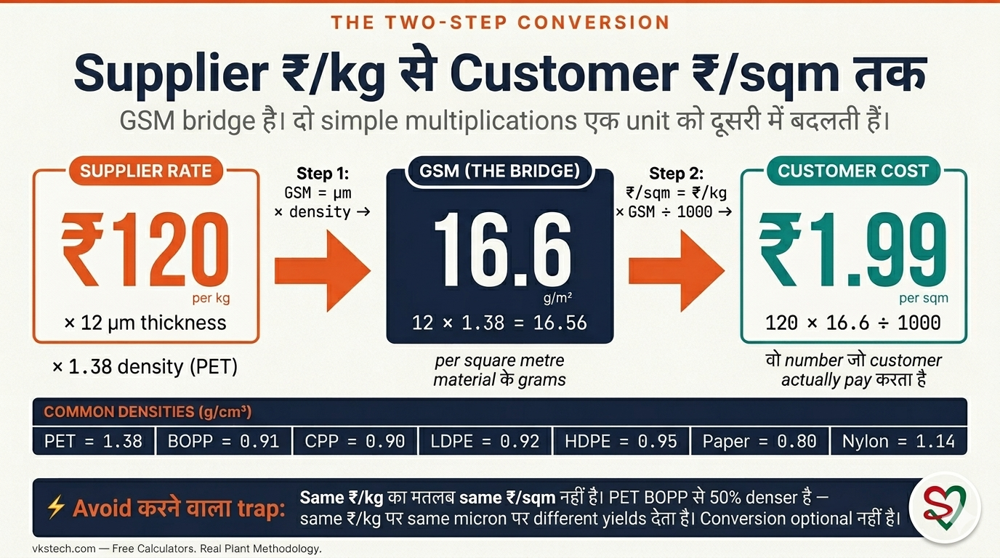

📖 9-min read | The Conversion That Changes Which Film Actually Wins on Price | Published May 2026
A converter calls a film supplier and asks for a quote. Supplier responds: "PET 12μm at ₹120/kg, BOPP 18μm at ₹150/kg." The converter does mental math, decides PET is cheaper, places the order. Three weeks later at the spec review meeting, the customer asks the obvious follow-up: "what is the cost per square metre of pouch?" — and the answer turns out to be that the BOPP option was barely more expensive per pouch (₹2.46/sqm vs PET's ₹1.99/sqm at ₹120/kg, but BOPP at the same ₹120/kg would have been ₹1.97/sqm — actually winning). The supplier quoted in ₹/kg, the customer thinks in ₹/sqm, and nobody did the conversion. This blog explains the formula behind the free Cost per Square Metre calculator on vkstech.com — what it computes, why ₹/kg is misleading on its own, the five real procurement situations where it changes the decision, and a bonus section on the inverse problem (when the customer specifies a ₹/sqm target and you need the ₹/kg ceiling).

Suppliers quote in ₹/kg because that is how they buy raw material and bill production. The packaging customer, on the other hand, makes pouches that have a measurable area — a 30g namkeen pouch is roughly 200 sqcm of film, a 500g atta bag is roughly 1000 sqcm. The customer's question is always "how much does my pouch cost?" — which translates to ₹/sqm, never ₹/kg. The two units only converge when both sides do the GSM conversion in the middle.
The conversion has two steps. First, calculate GSM (grams per square metre) from the film's micron and density. A 12-micron film of PET (density 1.38 g/cm³) has GSM = 12 × 1.38 = 16.56. A 12-micron film of BOPP (density 0.91 g/cm³) has GSM = 12 × 0.91 = 10.92 — significantly less material per square metre, even at the same micron. Second, multiply rate (₹/kg) by GSM and divide by 1000 to get ₹/sqm.
The reason ₹/kg comparisons mislead is that different polymers have different densities. PET is 50% denser than BOPP. So even when both films are quoted at the same ₹/kg, PET delivers fewer square metres per kilogram than BOPP — and a "cheaper" PET on ₹/kg basis can come out more expensive on ₹/sqm basis. Or vice versa. Without the conversion, no procurement decision is reliable.
1. Supplier quote comparison. Three suppliers quote three films at three different ₹/kg rates with three different microns. The only fair comparison is ₹/sqm — the cost of covering 1 square metre of customer's pouch. Without this conversion, procurement defaults to "lowest ₹/kg wins" which is wrong roughly half the time when materials and microns differ.
2. Customer pouch-cost negotiation. The customer asks "what does my packaging cost?" — and they mean per pouch, which means per sqm of film. The sales team needs to convert the supplier's ₹/kg quote into the customer's ₹/sqm reality, on the spot. Two team members with calculators arrive at the same answer; one with a calculator, the other guessing, end up with different commitments and a credibility problem.
3. Micron downgauging analysis. The customer wants to reduce film cost. Engineering proposes downgauging from 12 μm PET to 10 μm PET — same material, thinner. The savings show up as ₹/sqm reduction, not ₹/kg (the rate per kg often goes up slightly when downgauging because thinner film is harder to make). The calculator quantifies whether the downgauging actually saves money for the customer.
4. Sales team training. New sales hires often arrive without flexible packaging fluency. Teaching them the formula on day one — and making them practice the supplier-quote-to-customer-cost translation 20 times — is the difference between a salesperson who can hold a customer conversation and one who cannot. The calculator is the practice tool.
5. Procurement budget planning. Annual purchase plans run in tonnes and rupees: "we will buy 5,000 tonnes at average ₹140/kg, that's ₹70 crores." But the operations team thinks in jumbo lengths and finished pouches. Translating the budget plan into ₹/sqm by major substrate gives the operations team a number they can sanity-check against actual production costs.
Use the inline calculator below for the standard direction (₹/kg + micron → ₹/sqm). For the reverse direction (₹/sqm target → ₹/kg ceiling) see the bonus section. For the same calculator with shareable links and other related tools, use the full version on vkstech.com.
The table below covers common ₹/kg rates that Indian flexible-packaging procurement teams see today (May 2026 reference levels). Bookmark or screenshot for negotiation conversations.
| Film type | Thickness | GSM | Rate (₹/kg) | Cost (₹/sqm) | Yield (sqm/kg) |
|---|---|---|---|---|---|
| PET | 12 μm | 16.6 | ₹120 | ₹1.99 | 60.4 |
| PET | 12 μm | 16.6 | ₹140 | ₹2.32 | 60.4 |
| BOPP | 18 μm | 16.4 | ₹150 | ₹2.46 | 61.1 |
| BOPP | 25 μm | 22.8 | ₹145 | ₹3.30 | 43.9 |
| CPP | 30 μm | 27.0 | ₹140 | ₹3.78 | 37.0 |
| LDPE | 50 μm | 46.0 | ₹110 | ₹5.06 | 21.7 |
| LDPE | 80 μm | 73.6 | ₹108 | ₹7.95 | 13.6 |
| Paper | 80 μm (kraft) | 64.0 | ₹75 | ₹4.80 | 15.6 |
| Nylon (BOPA) | 15 μm | 17.1 | ₹280 | ₹4.79 | 58.5 |
The most striking row is Nylon BOPA: it has nearly the same GSM as PET 12μm (17.1 vs 16.6), but its premium ₹280/kg rate makes its ₹/sqm cost more than double PET's. Customers asking for nylon's puncture-resistance need to know the ₹/sqm consequence before committing. The calculator turns supplier ratecard differences into customer-visible economics in one step.
The Cost per Square Metre calculator solves the most common direction (rate → cost), but procurement frequently needs the inverse: a customer specifies "I will not pay more than ₹2.50/sqm for the laminate," and the buying team needs to translate that into the ₹/kg ceiling each substrate must hit. The formula is the same equation rearranged:
Three worked examples:
| Customer ceiling | Film spec | GSM | Max ₹/kg supplier can quote |
|---|---|---|---|
| ₹2.50/sqm | PET 12μm (density 1.38) | 16.6 | ≤ ₹150.97/kg |
| ₹3.00/sqm | BOPP 20μm (density 0.91) | 18.2 | ≤ ₹164.84/kg |
| ₹5.00/sqm | LDPE 50μm (density 0.92) | 46.0 | ≤ ₹108.70/kg |
This inverse direction is particularly useful when going into supplier negotiations with a hard customer-side budget. The procurement team walks in knowing exactly the ₹/kg below which they need quotes — and walks out with a yes-or-no answer, not a "let me check and get back to you."
1. Using a wrong density. The density inputs in the calculator are typical values for standard grades. Specialty grades — high-clarity BOPP, voided PET, talc-filled CPP — can vary by ±5%. If your supplier provides a spec sheet with the actual density, use that. The error from a wrong density flows directly into ₹/sqm with the same percentage magnitude.
2. Forgetting that laminates are sums, not single films. A 3-ply laminate of PET 12 + foil 9 + LDPE 50 has a total ₹/sqm equal to the sum of the three individual ₹/sqm values, plus the lamination cost adder (typically ₹0.50-1.50/sqm depending on adhesive system). Using this calculator on each layer separately and summing gives a defensible base; ignoring the lamination cost gives a number 20-30% too low.
3. Comparing ₹/sqm without normalising for barrier or print. A bare PET 12μm at ₹1.99/sqm is not the same product as a printed and metallised PET 12μm at ₹2.50/sqm — even though the math comes from the same formula. Apples-to-apples comparison requires identical substrate, identical print, identical metallisation. The calculator gives you the substrate-level cost; the converter has to add the value-add costs (printing, metallisation, lamination) separately to get the finished-laminate ₹/sqm.
📚 Related reads on this site: This blog explains the Cost per Square Metre calculator. Blog #27 covers the related Roll Weight calculator. Blog #35 explains the Roll OD calculator. Blog #28 covers the conversion cost framework that builds on top of ₹/sqm. The full set of free calculators (Weight, Length, OD, GSM↔Micron, Yield, Utilisation, Cost/sqm, Capacity) is at vkstech.com/#calculators.
Working with a non-standard polymer density? Negotiating a multi-layer laminate quote and not sure how to compare? Want to discuss how to build the printing and metallisation cost adders on top of the substrate ₹/sqm? Drop your question in the Q&A section at the bottom of this page — I respond personally to every thoughtful question.
📌 What's next. The calculator-explainer series continues — next up is the GSM ↔ Micron Conversion calculator (the building block underneath this entire blog), or the Production Yield % calculator (the simplest one but the most often misapplied). Tell me which you want next.

📖 9-min read | वो Conversion जो Change करती है कौन सी Film Actually Price पर जीतती है | May 2026 में published
एक converter film supplier को call करता है और quote माँगता है। Supplier respond करता है: "PET 12μm ₹120/kg, BOPP 18μm ₹150/kg।" Converter mental math करता है, decide करता है PET cheaper है, order place करता है। तीन हफ़्तों बाद spec review meeting में, customer obvious follow-up पूछता है: "मेरे pouch की cost per square metre क्या है?" — और answer ये निकलता है कि BOPP option per pouch barely ज़्यादा expensive था (₹2.46/sqm vs PET का ₹1.99/sqm @ ₹120/kg, पर BOPP को same ₹120/kg पर quote करते तो ₹1.97/sqm — actually जीतता)। Supplier ₹/kg में quote करता है, customer ₹/sqm में सोचता है, और कोई conversion नहीं करता। ये blog उस formula को explain करता है जो vkstech.com पर free Cost per Square Metre calculator के पीछे है — क्या compute करता है, ₹/kg अकेला क्यों misleading है, पाँच real procurement situations जहाँ decision बदलता है, और एक bonus section inverse problem पर (जब customer ₹/sqm target specify करे और आपको ₹/kg ceiling चाहिए)।

Suppliers ₹/kg में quote करते हैं क्योंकि वो raw material इसी तरह buy करते हैं और production bill करते हैं। Packaging customer, उल्टा, pouches बनाता है जिनका measurable area है — 30g namkeen pouch roughly 200 sqcm film है, 500g atta bag roughly 1000 sqcm है। Customer का question हमेशा "मेरे pouch की कितनी cost है?" — जो ₹/sqm में translate होता है, ₹/kg में नहीं। दोनों units सिर्फ़ तब converge होती हैं जब दोनों sides बीच में GSM conversion करें।
Conversion के दो steps हैं। पहले, film के micron और density से GSM (grams per square metre) calculate करें। 12-micron PET film (density 1.38 g/cm³) का GSM = 12 × 1.38 = 16.56। 12-micron BOPP film (density 0.91 g/cm³) का GSM = 12 × 0.91 = 10.92 — significantly कम material per square metre, same micron पर भी। दूसरे, rate (₹/kg) को GSM से multiply करें और 1000 से divide करें ₹/sqm पाने के लिए।
₹/kg comparisons mislead करने का reason ये है कि different polymers की different densities हैं। PET BOPP से 50% denser है। तो जब दोनों films same ₹/kg पर quote होती हैं, PET प्रति kilogram कम square metres deliver करता है BOPP से — और "cheaper" PET ₹/kg basis पर ₹/sqm basis पर ज़्यादा expensive निकल सकता है। या vice versa। Conversion के बिना, कोई procurement decision reliable नहीं है।
1. Supplier quote comparison। तीन suppliers तीन films को तीन different ₹/kg rates पर different microns में quote करते हैं। केवल fair comparison ₹/sqm है — customer के pouch के 1 square metre cover करने की cost। इस conversion के बिना, procurement default "lowest ₹/kg wins" पर जाती है जो लगभग आधे time ग़लत होती है जब materials और microns differ करते हैं।
2. Customer pouch-cost negotiation। Customer पूछता है "मेरी packaging कितनी cost करती है?" — और उसका मतलब per pouch, यानी per sqm of film। Sales team को supplier के ₹/kg quote को customer के ₹/sqm reality में convert करना है, on the spot। Calculators वाले दो team members same answer पर पहुँचते हैं; एक calculator वाला, दूसरा guess करता हुआ, different commitments और credibility problem के साथ खत्म होते हैं।
3. Micron downgauging analysis। Customer film cost कम करना चाहता है। Engineering 12 μm PET से 10 μm PET downgauge propose करती है — same material, thinner। Savings ₹/sqm reduction की तरह दिखती हैं, ₹/kg नहीं (per kg rate often slightly जाता है downgauging में क्योंकि thinner film बनाना hard है)। Calculator quantify करता है कि downgauging actually customer के लिए money saves करता है या नहीं।
4. Sales team training। New sales hires often flexible packaging fluency के बिना आते हैं। Day one पर formula सिखाना — और 20 बार supplier-quote-to-customer-cost translation practice कराना — एक salesperson जो customer conversation hold कर सके और एक जो न कर सके के बीच का difference है। Calculator practice tool है।
5. Procurement budget planning। Annual purchase plans tonnes और rupees में चलते हैं: "हम 5,000 tonnes buy करेंगे average ₹140/kg पर, यानी ₹70 crores।" पर operations team jumbo lengths और finished pouches में सोचती है। Budget plan को major substrate के हिसाब से ₹/sqm में translate करना operations team को number देता है जो वो actual production costs के against sanity-check कर सकें।
नीचे inline calculator standard direction (₹/kg + micron → ₹/sqm) के लिए use करें। Reverse direction (₹/sqm target → ₹/kg ceiling) के लिए bonus section देखें। Same calculator shareable links और दूसरे related tools के साथ vkstech.com पर full version पर है।
नीचे की table common ₹/kg rates cover करती है जो Indian flexible-packaging procurement teams आज देख रही हैं (May 2026 reference levels)। Negotiation conversations के लिए bookmark या screenshot करें।
| Film type | Thickness | GSM | Rate (₹/kg) | Cost (₹/sqm) | Yield (sqm/kg) |
|---|---|---|---|---|---|
| PET | 12 μm | 16.6 | ₹120 | ₹1.99 | 60.4 |
| PET | 12 μm | 16.6 | ₹140 | ₹2.32 | 60.4 |
| BOPP | 18 μm | 16.4 | ₹150 | ₹2.46 | 61.1 |
| BOPP | 25 μm | 22.8 | ₹145 | ₹3.30 | 43.9 |
| CPP | 30 μm | 27.0 | ₹140 | ₹3.78 | 37.0 |
| LDPE | 50 μm | 46.0 | ₹110 | ₹5.06 | 21.7 |
| LDPE | 80 μm | 73.6 | ₹108 | ₹7.95 | 13.6 |
| Paper | 80 μm (kraft) | 64.0 | ₹75 | ₹4.80 | 15.6 |
| Nylon (BOPA) | 15 μm | 17.1 | ₹280 | ₹4.79 | 58.5 |
सबसे striking row Nylon BOPA है: इसका GSM PET 12μm के लगभग same है (17.1 vs 16.6), पर इसका premium ₹280/kg rate इसकी ₹/sqm cost को PET से दोगुना से ज़्यादा बना देता है। Customers जो nylon की puncture-resistance माँग रहे हैं उन्हें commit करने से पहले ₹/sqm consequence जानने की ज़रूरत है। Calculator supplier ratecard differences को customer-visible economics में एक step में बदलता है।
Cost per Square Metre calculator सबसे common direction (rate → cost) solve करता है, पर procurement frequently inverse चाहती है: customer specify करता है "मैं laminate के लिए ₹2.50/sqm से ज़्यादा नहीं दूँगा," और buying team को उसे हर substrate को hit करने वाले ₹/kg ceiling में translate करना है। Formula same equation rearranged है:
तीन worked examples:
| Customer ceiling | Film spec | GSM | Max ₹/kg supplier quote कर सकता है |
|---|---|---|---|
| ₹2.50/sqm | PET 12μm (density 1.38) | 16.6 | ≤ ₹150.97/kg |
| ₹3.00/sqm | BOPP 20μm (density 0.91) | 18.2 | ≤ ₹164.84/kg |
| ₹5.00/sqm | LDPE 50μm (density 0.92) | 46.0 | ≤ ₹108.70/kg |
ये inverse direction तब particularly useful है जब hard customer-side budget के साथ supplier negotiations में जा रहे हैं। Procurement team exactly जानती हुई जाती है कि किस ₹/kg के नीचे quotes चाहिए — और yes-or-no answer के साथ बाहर आती है, "let me check and get back to you" के साथ नहीं।
1. ग़लत density use करना। Calculator में density inputs standard grades के typical values हैं। Specialty grades — high-clarity BOPP, voided PET, talc-filled CPP — ±5% vary कर सकती हैं। अगर आपका supplier actual density के साथ spec sheet provide करता है, उसे use करें। ग़लत density से आने वाली error directly ₹/sqm में same percentage magnitude से flow होती है।
2. ये भूलना कि laminates sums हैं, single films नहीं। PET 12 + foil 9 + LDPE 50 का 3-ply laminate का total ₹/sqm तीनों individual ₹/sqm values के sum के बराबर है, plus lamination cost adder (typically ₹0.50-1.50/sqm depending on adhesive system)। हर layer पर इस calculator का use करना और sum करना defensible base देता है; lamination cost ignore करना 20-30% कम number देता है।
3. ₹/sqm को barrier या print के लिए normalise किए बिना compare करना। Bare PET 12μm @ ₹1.99/sqm same product नहीं है printed और metallised PET 12μm @ ₹2.50/sqm — same formula से math आने के बावजूद। Apples-to-apples comparison identical substrate, identical print, identical metallisation चाहिए। Calculator आपको substrate-level cost देता है; converter को finished-laminate ₹/sqm पाने के लिए value-add costs (printing, metallisation, lamination) separately add करनी हैं।
📚 इस site पर related reads: ये blog Cost per Square Metre calculator explain करता है। Blog #27 related Roll Weight calculator cover करता है। Blog #35 Roll OD calculator explain करता है। Blog #28 conversion cost framework cover करता है जो ₹/sqm के top पर build करता है। Free calculators का full set (Weight, Length, OD, GSM↔Micron, Yield, Utilisation, Cost/sqm, Capacity) vkstech.com/#calculators पर है।
Non-standard polymer density के साथ काम कर रहे हैं? Multi-layer laminate quote negotiate कर रहे हैं और sure नहीं कैसे compare करें? Discuss करना चाहते हैं substrate ₹/sqm के top पर printing और metallisation cost adders कैसे build करें? अपना सवाल इस page के bottom पर Q&A section में डालें — मैं हर thoughtful question का personally जवाब देता हूँ।
📌 आगे क्या। Calculator-explainer series जारी है — अगला है GSM ↔ Micron Conversion calculator (इस पूरे blog का underlying building block), या Production Yield % calculator (सबसे simple पर सबसे ज़्यादा misapplied)। बताएँ कौन सा next चाहिए।